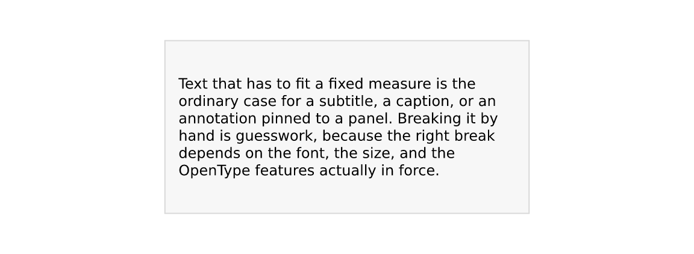
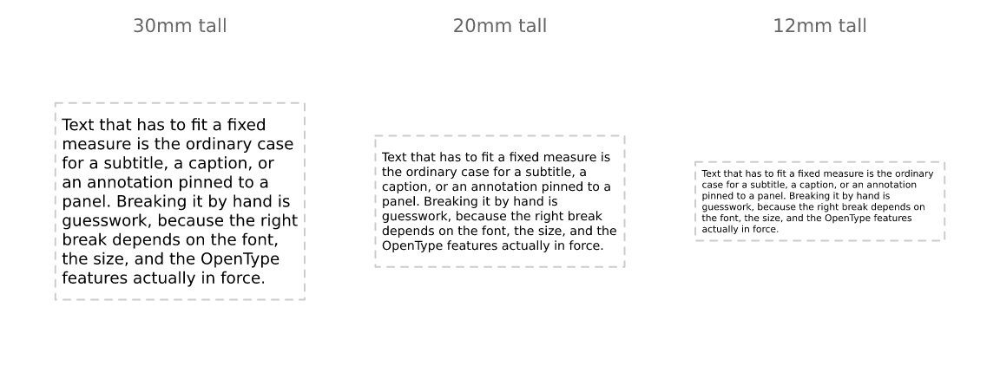
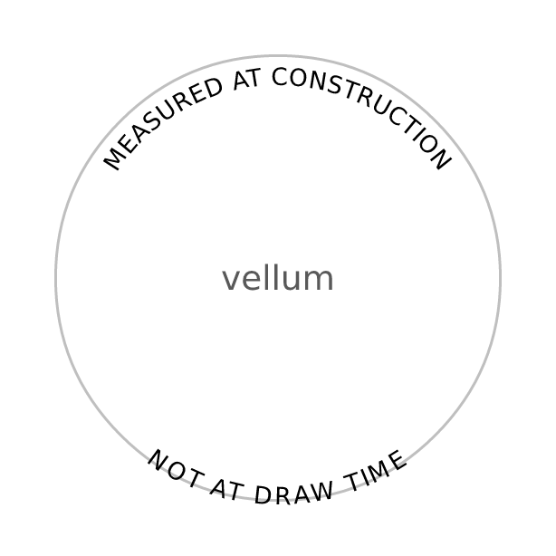
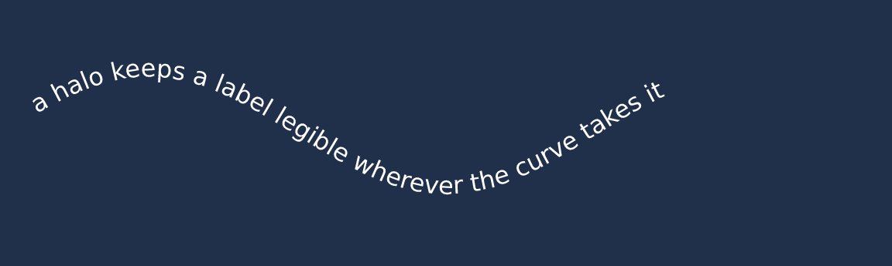
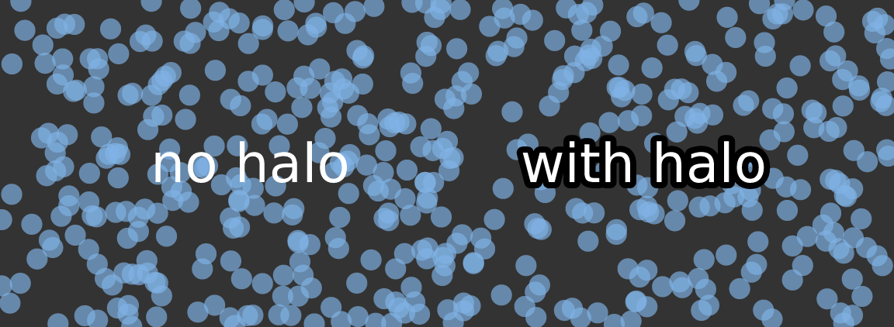
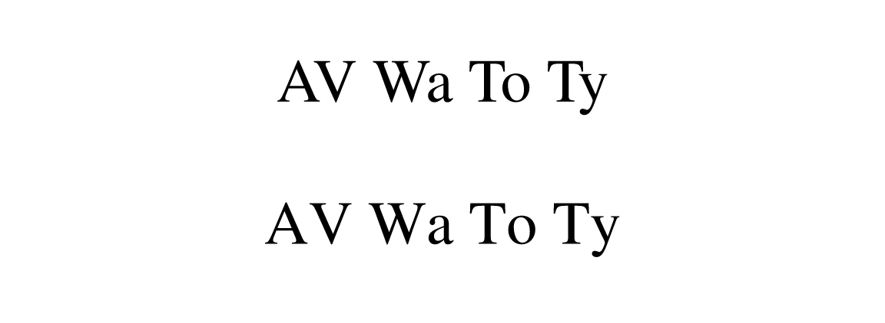

vellum ships the shaper and the font tables in-process, and it measures text when a scene is built rather than when it is drawn. Between them, those two facts let it do things with text that R’s graphics stack otherwise cannot: fit text to a box, set it along a curve, stroke the glyph outlines, and ask the font for alternate glyphs.
Text that fits a box
Give text_grob() a width and it wraps:
caption <- paste(
"Text that has to fit a fixed measure is the ordinary case for a subtitle, a",
"caption, or an annotation pinned to a panel. Breaking it by hand is guesswork,",
"because the right break depends on the font, the size, and the OpenType",
"features actually in force."
)
display(
vl_scene(6, 1.8, dpi = 96, bg = "white") |>
draw(rect_grob(width = vl_unit(80, "mm"), height = vl_unit(38, "mm"),
gp = vl_gpar(fill = "grey97", col = "grey85"))) |>
draw(text_grob(caption, width = vl_unit(74, "mm"), gp = vl_gpar(fontsize = 9)))
)
The break decision is made on the shaped width of each candidate line, not on a sum of per-word advances. Kerning and any active feature are therefore accounted for, and a line can never render wider than it measured — which is a guarantee, not a tendency, and is what makes auto-fit below trustworthy.
width has to be an absolute unit
(mm/cm/in/pt), and
that restriction is the interesting part. Wrapping happens when the grob
is constructed, and a viewport’s size in npc or
native does not exist until render time. Rather than
pretend otherwise, vellum asks for the physical measure you want to wrap
to. A layout engine above vellum knows its panel widths in millimetres,
so this costs it nothing.
Alignment
align positions lines within the box. Note that the
block is a box of exactly the requested width, so
just anchors the box rather than the longest line — which
is what lets a right-aligned caption line up with a panel edge.
box <- function(scene, x, align) {
scene |>
draw(rect_grob(x = x, y = 0.46, width = vl_unit(40, "mm"),
height = vl_unit(34, "mm"),
gp = vl_gpar(fill = "grey97", col = "grey85"))) |>
draw(text_grob(sprintf('"%s"', align), x = x, y = 0.92,
gp = vl_gpar(fontsize = 9, col = "grey40"))) |>
draw(text_grob(caption, x = x, y = 0.46, width = vl_unit(36, "mm"),
align = align, gp = vl_gpar(fontsize = 6)))
}
display(
vl_scene(6, 2.6, dpi = 96, bg = "white") |>
box(0.14, "left") |> box(0.38, "centre") |>
box(0.62, "right") |> box(0.86, "justify")
)
"justify" stretches the inter-word spaces to flush both
edges, leaving the last line of each paragraph ragged — a two-word final
line stretched to full measure is the classic ugly artifact.
Auto-fit
fit = TRUE shrinks the font — never grows it — until the
wrapped block fits width × height:
fitted <- vl_scene(6, 2.2, dpi = 96, bg = "white")
for (i in seq_along(hs <- c(30, 20, 12))) {
x <- c(0.18, 0.5, 0.82)[i]
fitted <- fitted |>
draw(rect_grob(x = x, y = 0.45, width = vl_unit(38, "mm"),
height = vl_unit(hs[i], "mm"),
gp = vl_gpar(fill = NA, col = "grey80", lty = "dashed"))) |>
draw(text_grob(caption, x = x, y = 0.45, width = vl_unit(36, "mm"),
height = vl_unit(hs[i] - 2, "mm"), fit = TRUE,
gp = vl_gpar(fontsize = 11))) |>
draw(text_grob(paste0(hs[i], "mm tall"), x = x, y = 0.93,
gp = vl_gpar(fontsize = 8, col = "grey40")))
}
display(fitted)
Each probe re-wraps, because the line breaks depend on the size — this is a search, not a scale factor. One size is chosen for the whole grob: a row of labels at four different sizes is a defect, not a feature.
This is the piece that genuinely cannot be built on grid. Fitting text to a box requires measuring it before it is drawn, and in grid a string has no width until a device is open.
Text on a path
text_path_grob() takes a polyline baseline instead of a
point. Each glyph keeps the pen position shaping gave it and is placed
that far along the path, rotated to the local tangent.
arc <- function(from, to, r = 0.34) {
th <- seq(from, to, length.out = 120)
list(x = 0.5 + r * cos(th), y = 0.5 + r * sin(th))
}
upper <- arc(pi, 0)
lower <- arc(pi, 2 * pi) # reversed, so it reads the right way up
display(
vl_scene(3.2, 3.2, dpi = 96, bg = "white") |>
draw(circle_grob(r = 0.4, gp = vl_gpar(fill = NA, col = "grey75", lwd = 1.5))) |>
draw(text_path_grob("MEASURED AT CONSTRUCTION", x = upper$x, y = upper$y,
offset = 5, gp = vl_gpar(fontsize = 10))) |>
draw(text_path_grob("NOT AT DRAW TIME", x = lower$x, y = lower$y,
offset = -12, gp = vl_gpar(fontsize = 10))) |>
draw(text_grob("vellum", gp = vl_gpar(fontsize = 14, col = "grey35")))
)
Two things to know.
Glyphs follow the tangent unconditionally, exactly as SVG
textPath does, so a label on the underside of a closed
curve reads upside-down. The fix is to reverse the
path, as lower does above — not the
glyphs. Flipping glyphs individually would put them the right way up but
in reverse order, which is mirror-writing, so vellum does not offer
it.
Arc length is measured on the rendered path, which is why
this lives in the engine rather than in R: glyph advances are in points
and the baseline is in npc or native, and
nothing can put those in the same space until the viewport’s pixel
extent is known.
On-path text is an ordinary text node with a baseline attached, so
everything else still applies — halos, features, colour, clipping, and
all three backends. The run is fanned out into one glyph per position at
draw time, so SVG output is still real <text> and PDF
still carries copyable text:
x <- seq(0.04, 0.96, length.out = 200)
display(
vl_scene(6, 1.8, dpi = 96, bg = "#20304A") |>
draw(text_path_grob(
"a halo keeps a label legible wherever the curve takes it",
x = x, y = 0.5 + 0.22 * sin(x * 3 * pi), just = "left", offset = 3,
gp = vl_gpar(fontsize = 12, col = "white",
halo_col = "#20304A", halo_width = 2.5)
))
)
Halos
A label over a dense scatter, a photograph, or a map tile is hard to read whatever colour you make it. The usual fix is a halo (or “shadowtext”): the glyph outlines stroked in a contrasting colour underneath the fill.
Packages that do this on top of grid draw the label eight times at small offsets, because grid gives them no way to stroke a glyph. vellum has the outlines, so it strokes them once:
set.seed(1)
n <- 500
cloud <- vl_scene(6, 2, dpi = 96, bg = "grey20") |>
draw(points_grob(runif(n), runif(n), size = vl_unit(1.8, "mm"),
gp = vl_gpar(fill = "#7FB2E5AA", col = NA)))
display(
cloud |>
draw(text_grob("no halo", x = 0.28, y = 0.5,
gp = vl_gpar(fontsize = 26, col = "white"))) |>
draw(text_grob("with halo", x = 0.72, y = 0.5,
gp = vl_gpar(fontsize = 26, col = "white",
halo_col = "black", halo_width = 3)))
)
halo_width is in points, like
fontsize, so a halo keeps its proportion at any dpi or
figure size. Roughly an eighth of the font size is a good starting
point. A halo needs both halo_col and a positive
halo_width; either on its own does nothing.
The halo is drawn as a complete pass before any glyph is filled, so a
wide halo on one letter never paints over the neighbour that was already
drawn. All three backends agree: the raster and outline-SVG paths do the
two passes explicitly, native SVG uses paint-order, and PDF
strokes then fills.
Because a sprite bakes only the fill, haloed text always takes the exact outline path — the glyph-bitmap fast path is bypassed for it. Halos are usually a handful of labels, so this costs nothing in practice.
OpenType features
A font often contains more glyphs than its default mapping exposes:
tabular figures, small caps, oldstyle numerals, alternate ligatures.
features takes a named vector of four-character OpenType
tags and passes them to the shaper.
kerned <- text_grob("AV Wa To Ty", x = 0.5, y = 0.72,
gp = vl_gpar(fontfamily = "Times", fontsize = 30))
loose <- text_grob("AV Wa To Ty", x = 0.5, y = 0.28,
gp = vl_gpar(fontfamily = "Times", fontsize = 30,
features = c(kern = 0)))
display(vl_scene(6, 2, dpi = 96) |> draw(kerned) |> draw(loose))
The tags worth knowing:
| tag | effect |
|---|---|
tnum |
tabular (fixed-width) figures — digits stop jittering between ticks |
onum |
oldstyle figures, which sit better in running text |
smcp |
small caps |
liga |
standard ligatures (0 switches them off) |
kern |
kerning (0 switches it off) |
Tabular figures are the one to reach for first.
Proportional digits make an axis label shift horizontally as its value
changes, which reads as jitter when a plot animates or a table updates.
c(tnum = 1) fixes that in one argument.
Two caveats. A feature the font does not carry is silently ignored —
that is HarfBuzz’s behaviour, and vellum cannot check it for you, so
compare output rather than assuming. And most system UI fonts already
ship tabular digits, so tnum is frequently a no-op; the
features that pay off tend to live in text faces and commercial
fonts.
Measurement follows features
Features change glyph widths, so a size measured without them would
reserve the wrong space. vl_strwidth(),
vl_strheight(), grobwidth() and
grobheight() all honour the same features, and
the shape cache is keyed on them:
c(kerned = vl_strwidth("AV Wa To Ty", "Times", fontsize = 30, unit = "mm"),
unkerned = vl_strwidth("AV Wa To Ty", "Times", fontsize = 30, unit = "mm",
features = c(kern = 0)))
#> kerned unkerned
#> 57.22166 61.41641